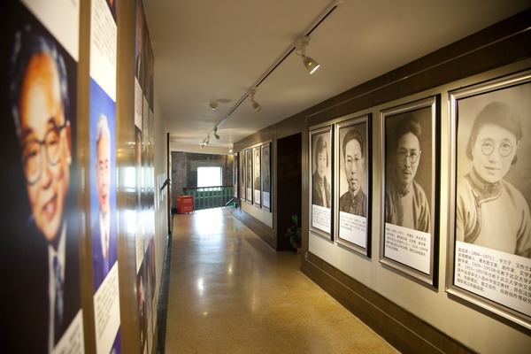
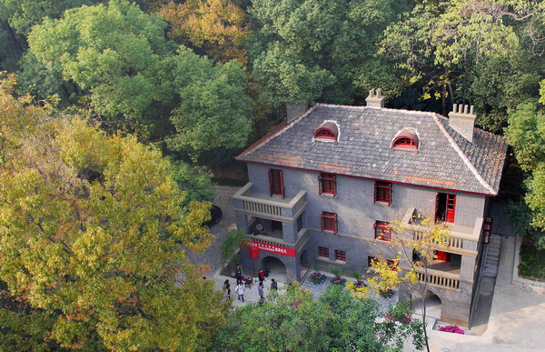
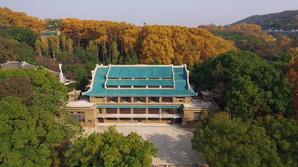

网站链接 links

武汉大学图书馆以其历史悠久、藏书丰富、建筑宏伟、环境幽雅而闻名于世。图书馆源于1893年清末湖广总督张之洞创办的湖北自强学堂图书室，1917 年正式建馆，1928 年定名为国立武汉大学图书馆。1935 年启用坐落在东湖之滨、狮子山顶的老图书馆大楼。武汉大学图书馆老馆及其周围的建筑群，被列入第五批全国重点文物保护单位。
1985年在校园中心又建成了一座新图书馆。2000年8月，武汉大学与武汉水利电力大学、武汉测绘科技大学、湖北医科大学合并，四校图书馆也相应合并为新的武汉大学图书馆。2011年10月，总建筑面积为35548平方米的武汉大学图书馆（总馆）新馆落成启用，图书馆的服务功能得到进一步提高。全校现有图书馆馆舍面积为62403平米，资料室为15601平米，总面积达到 78004平米。改扩建的信息科学分馆新馆投入使用后，全校图书馆馆舍面积将达9万平米。
全馆现设文科分馆、理科分馆、工学分馆、信息科学分馆和医学分馆等五个分馆，均为湖北省“研究级文献收藏单位”，全校35个院系、研究中心及实验室设有图书资料室，在业务上由总馆统一领导，共同组成学校的文献服务网络。
截止至2014年12月，文献资源总量达1569万余册。印刷型文献共698万册，其中图书582万册，报刊合订本94万册，声像缩微资料22万件；2014年订购各类文献数据库455个，中外文电子书刊达871万册，其中电子图书741万册，电子期刊120万册；图书馆藏有古籍20余万册，有300多种收入《中国古籍善本书目》，61种入选《国家珍贵古籍名录》。学科覆盖面广，遍及文、理、工、农、医等各个领域，其中尤以我校重点学科文献的收藏最为完整。

2013年11月28日，始建于1917年的樱顶老图书馆经过一年多的整修，以武汉大学校史馆的身份重新呈现在世人面前。
校史馆一楼保留了举办“珞珈讲坛”的功能，负一楼、四楼和五楼为校史展区，分为通史展和专题展两部分。通过文字、实物、图片、多媒体、虚拟影像等多种方式，再现从1893年创办湖北自强学堂至今的120年办学历程。

1937年，抗日战争全面爆发，国共两党实现第二次合作。国民政府西迁武汉，武汉成为全民族抗战指挥中心。12月，中共中央在武汉设长江局（对外称中共代表团），周恩来从延安来到武汉，主管军事和统战工作，并任改组后的国民政府军事委员会政治部副部长。1938年5月至9月，周恩来、邓颖超夫妇居住在“珞珈山十八栋”27号，即第19栋别墅。
周恩来在寓居“十八栋”期间，组织领导“抗日活动宣传周”“七七抗战一周年纪念”等系列抗日宣传活动，先后在武汉大学做了3次演讲，给军官训练团授课，会见国民党高级将领、民主人士、文化界和新闻界的知名人士，宣传共产党的抗日主张。因此，这里有着“国共合作抗日小客厅”之誉。
武汉大学周恩来故居因其重要的历史与文化价值，于1983年被武汉市人民政府列为武汉市文物保护单位，2001年，被国务院批准为全国重点文物保护单位。

武汉大学万林艺术博物馆位于珞珈山麓，由中国当代著名建筑师朱锫设计，外形设计酷似一颗闪耀的钻石，是一座在校园布局中有颠覆性的建筑。它在以传统建筑为主题的校园中心设置了一个全新的现代空间，让传统建筑与现代建筑的魅力相得益彰。
万林艺术博物馆建筑面积约8000余平方米，主要用于艺术展览、艺术文化交流、考古成果展览、教学及学生活动等。 万林艺术博物馆由泰康人寿董事长陈东升校友捐资建设，以其父的名字命名。2013年11月28日，武汉大学万林艺术博物馆举行封顶仪式。

宋卿体育馆位于狮子山西部南坡底，坐东朝西，是武汉大学早期建筑群的重要组成部分。该馆建于1935年，由黎元洪（字宋卿）之子黎绍基和黎绍业将其筹建江汉大学的基金十万大洋（中兴煤矿股票）转捐给武汉大学而建造。
该馆为钢筋混凝土框架结构，长35米，宽21.3米，高15.1米，建筑面积2748平方米，建筑层数两层，上层为球场，下层为健身房。屋顶结构采用三绞拱钢架与钢筋混凝土相结合组成大跨度空间，别具一格的山墙，孔雀蓝琉璃瓦屋顶随三绞拱的弧线轮廓而转折，形成轮舵式的山墙和三重檐歇山顶，四隅设亭，二层内有看台，外有观景台，利用密檐高差采光通风。整个体育馆融使用功能、建筑艺术和当时先进的建筑技术为一体，堪称我国20世纪30年代体育馆建筑经典佳作。

图书馆 |
武汉大学图书馆以其历史悠久、藏书丰富、建筑宏伟、环境幽雅而闻名于世。图书馆源于1893年清末湖广总督张之洞创办的湖北自强学堂图书室，1917 年正式建馆，1928 年定名为国立武汉大学图书馆。1935 年启用坐落在东湖之滨、狮子山顶的老图书馆大楼。武汉大学图书馆老馆及其周围的建筑群，被列入第五批全国重点文物保护单位。 1985年在校园中心又建成了一座新图书馆。2000年8月，武汉大学与武汉水利电力大学、武汉测绘科技大学、湖北医科大学合并，四校图书馆也相应合并为新的武汉大学图书馆。2011年10月，总建筑面积为35548平方米的武汉大学图书馆（总馆）新馆落成启用，图书馆的服务功能得到进一步提高。全校现有图书馆馆舍面积为62403平米，资料室为15601平米，总面积达到 78004平米。改扩建的信息科学分馆新馆投入使用后，全校图书馆馆舍面积将达9万平米。 全馆现设文科分馆、理科分馆、工学分馆、信息科学分馆和医学分馆等五个分馆，均为湖北省“研究级文献收藏单位”，全校35个院系、研究中心及实验室设有图书资料室，在业务上由总馆统一领导，共同组成学校的文献服务网络。 截止至2014年12月，文献资源总量达1569万余册。印刷型文献共698万册，其中图书582万册，报刊合订本94万册，声像缩微资料22万件；2014年订购各类文献数据库455个，中外文电子书刊达871万册，其中电子图书741万册，电子期刊120万册；图书馆藏有古籍20余万册，有300多种收入《中国古籍善本书目》，61种入选《国家珍贵古籍名录》。学科覆盖面广，遍及文、理、工、农、医等各个领域，其中尤以我校重点学科文献的收藏最为完整。 |
校史馆 |
2013年11月28日，始建于1917年的樱顶老图书馆经过一年多的整修，以武汉大学校史馆的身份重新呈现在世人面前。 校史馆一楼保留了举办“珞珈讲坛”的功能，负一楼、四楼和五楼为校史展区，分为通史展和专题展两部分。通过文字、实物、图片、多媒体、虚拟影像等多种方式，再现从1893年创办湖北自强学堂至今的120年办学历程。 |
周恩来故居 |
1937年，抗日战争全面爆发，国共两党实现第二次合作。国民政府西迁武汉，武汉成为全民族抗战指挥中心。12月，中共中央在武汉设长江局（对外称中共代表团），周恩来从延安来到武汉，主管军事和统战工作，并任改组后的国民政府军事委员会政治部副部长。1938年5月至9月，周恩来、邓颖超夫妇居住在“珞珈山十八栋”27号，即第19栋别墅。 周恩来在寓居“十八栋”期间，组织领导“抗日活动宣传周”“七七抗战一周年纪念”等系列抗日宣传活动，先后在武汉大学做了3次演讲，给军官训练团授课，会见国民党高级将领、民主人士、文化界和新闻界的知名人士，宣传共产党的抗日主张。因此，这里有着“国共合作抗日小客厅”之誉。 武汉大学周恩来故居因其重要的历史与文化价值，于1983年被武汉市人民政府列为武汉市文物保护单位，2001年，被国务院批准为全国重点文物保护单位。 |
艺术博物馆 |
武汉大学万林艺术博物馆位于珞珈山麓，由中国当代著名建筑师朱锫设计，外形设计酷似一颗闪耀的钻石，是一座在校园布局中有颠覆性的建筑。它在以传统建筑为主题的校园中心设置了一个全新的现代空间，让传统建筑与现代建筑的魅力相得益彰。 万林艺术博物馆建筑面积约8000余平方米，主要用于艺术展览、艺术文化交流、考古成果展览、教学及学生活动等。 万林艺术博物馆由泰康人寿董事长陈东升校友捐资建设，以其父的名字命名。2013年11月28日，武汉大学万林艺术博物馆举行封顶仪式。 |
宋卿体育馆 |
宋卿体育馆位于狮子山西部南坡底，坐东朝西，是武汉大学早期建筑群的重要组成部分。该馆建于1935年，由黎元洪（字宋卿）之子黎绍基和黎绍业将其筹建江汉大学的基金十万大洋（中兴煤矿股票）转捐给武汉大学而建造。 该馆为钢筋混凝土框架结构，长35米，宽21.3米，高15.1米，建筑面积2748平方米，建筑层数两层，上层为球场，下层为健身房。屋顶结构采用三绞拱钢架与钢筋混凝土相结合组成大跨度空间，别具一格的山墙，孔雀蓝琉璃瓦屋顶随三绞拱的弧线轮廓而转折，形成轮舵式的山墙和三重檐歇山顶，四隅设亭，二层内有看台，外有观景台，利用密檐高差采光通风。整个体育馆融使用功能、建筑艺术和当时先进的建筑技术为一体，堪称我国20世纪30年代体育馆建筑经典佳作。 |